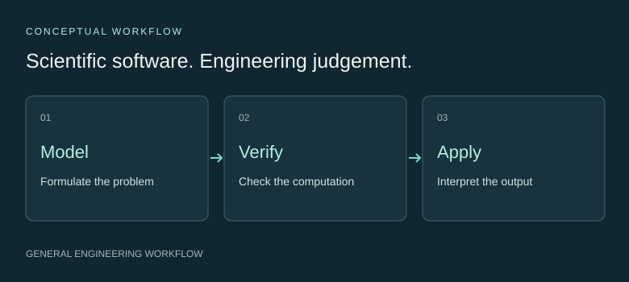
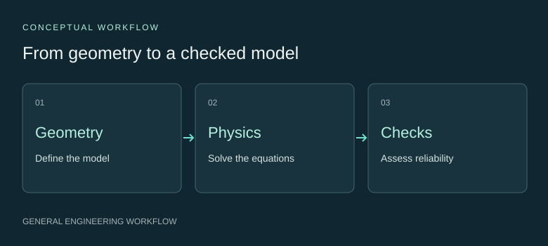

Computational models for materials problems.
I use COMSOL, Python-based machine learning and 3D image analysis to work on materials and engineering problems. My focus is building useful models and checking the reliability of their outputs.
COMSOL · Python · scikit-learn · XGBoost · 3D image analysis
GUANYU ZOU · UNIVERSITY OF MANCHESTER
Interested in Application Scientist and Application Engineer roles

Tools I use.
Problems I solve.
Scientific methods and software I have used, connected to the practical tasks they support.
COMSOL Multiphysics
3D FEM & thermal physics
Python · scikit-learn · XGBoost
Regression, surrogates & validation
3D Image Quantification
Segmentation & structural measurements
Scientific software workflows
Automation & reproducibility
Technical work.
Engineering thinking.
An overview of my work in simulation, scientific machine learning and image analysis, followed by an emerging research interest.
COMSOL FEM & thermal modelling
Stochastic geometry, coupled thermal physics and structured simulation studies.

Scientific ML & surrogate models
Python workflows for organising scientific data, comparing regressors and evaluating generalisation.

3D imaging & structural analysis
Segmentation and quantitative measurements, with attention to representation and measurement reliability.

AI for Science: emerging interests
Exploring how physical knowledge and reliable scientific data can guide useful learning tasks.

Selected findings from this doctoral research are currently being prepared for academic publication. Detailed results are therefore not publicly presented at this stage.
The engineering
behind the research.
Software and reusable methods for scientific modelling, data handling and technical communication.
Simulation automation
Geometry generation, programmatic model setup, batch execution and checked exports.
Reproducible analysis
Structured inputs, resumable stages and consistent interfaces between Python and simulation software.
Scientific Figure Palette Lab
A browser tool for inspecting image colours and proposing reusable figure palettes.
Evidence-guided writing tools
Reusable skills for extracting editorial principles and reviewing scientific writing.
Build it.
Test it. Use it.
I start with the engineering question, choose a suitable representation and test the computation before interpreting its outputs.
Formulate & solve
Define assumptions, organise geometry and data, and choose appropriate physics or statistical models.
Verify & evaluate
Check units, convergence, data separation and sensitivity. Keep evaluation aligned with how the model will be used.
Interpret & communicate
Explain the output, its scope and the evidence needed for an engineering decision.
A home for
AI for Science.
EARLY EXPLORATIONI am interested in how physical knowledge, interpretable representations and reliable data can guide machine learning for materials analysis.
This is an emerging direction, with the focus on choosing useful questions and designing evaluation.
Explore the direction ↗Hi, I'm Guanyu.
I am a materials researcher at the University of Manchester, where I have submitted my PhD thesis. My work combines finite-element simulation, Python-based machine learning and 3D structural analysis.
I enjoy turning scientific problems into computational workflows and explaining how the tools work. I am interested in Application Scientist and Application Engineer roles that combine modelling, problem-solving and technical communication.
University of Manchester
Materials research
Scientific computing
Simulation workflow engineering
Let's make complex
science useful.
My interests span scientific software, computational modelling and technical communication.